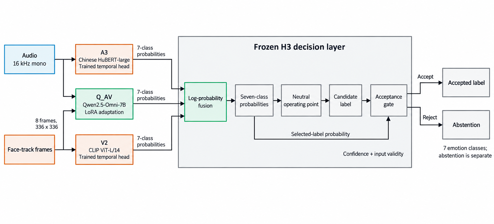

01 / Complementary experts
Hear and see together.
Qwen2.5-Omni-7B with LoRA supplies Q_AV predictions. Chinese HuBERT and CLIP ViT-L/14 supply the A3 audio and V2 visual specialists.
Q_AV + A3 + V2 → H3
Audio-visual emotion perception from Mundiscope. Bringing voice and facial expression together, with room for uncertainty.
Chinese-language research · Single-person scope
The implemented sensing layer of Sense → Remember → Express.
Seven expression categories · a shared output space
01 / Watch the system
Eight selected examples, with original audio and saved model outputs. Six EmotionTalk cases are followed by two CH-SIMS v2 film clips that show complementary evidence and abstention.
Recorded outputs, edited for explanation. This is not live inference. The 3D structure, particle motion and reveal times are schematic; they are not internal neural activations or measured output timestamps. The eight cases are selected examples, not a random performance sample. CH-SIMS annotations describe sentiment, so its clips do not receive invented seven-class correctness labels.
02 / Approach
MundiSense v1 combines a task-adapted audio-visual model with speech and facial-expression specialists. Frozen probability fusion and decision rules form the default H3 system.
Qwen2.5-Omni-7B with LoRA supplies Q_AV predictions. Chinese HuBERT and CLIP ViT-L/14 supply the A3 audio and V2 visual specialists.
Q_AV + A3 + V2 → H3
Frozen calibration, a neutral operating point and rejection rules shape the final decision. Missing modalities use separate routes; competing face tracks can trigger rejection.
Scores + routing + abstention
The streaming prototype segments speech and emits timestamped events. Recorded-stream replay measures how segmentation affects recognition and waiting time.
Speech segments → timestamped events

03 / Evidence
Recorded-data evaluations with frozen models and decision rules. The task, population and operating condition stay beside each result.
CH-SIMS v2 test · Pearson r
976 media-available clips of 1,034
95% CI: 0.756–0.829
EmotionTalk R3 · 1,929 utterances
H3 · complete-utterance evaluation
No threshold rejection (OP-N)
EmotionTalk R4 · 1,929 utterances
Constructed dialogue-duration streams
Macro-F1 · coverage 87.66%
Correlation and macro-F1 measure different tasks. They are not interchangeable accuracy claims. The CH-SIMS all-clip correlation, including unavailable media, is 0.761. The film's 0.649 F1 is the separate R4 correct-boundary condition, not an accuracy computed on the eight demo cases. Measurement notes ↓
| Evaluation | Fixed OP-R90 result | Coverage | Context |
|---|---|---|---|
| EmotionTalk R3 | Macro-F1 0.642 | 88.49% | 1,929 utterances; rejected cases remain in the F1 denominator |
| CH-SIMS v2 test | Accepted-clip Pearson r 0.810 | 62.38% | 645 of 1,034 clips accepted under the same frozen threshold |
3.11 s P50 / 11.02 s P95
Annotated utterance end → last overlapping event output.
2.21 s P50 / 2.80 s P95
Planned VAD endpoint → output.
Measured on three hours of recorded-stream replay, using an RTX 5090 32 GB workstation. The longer clock includes waiting for merged or split segments; it is not time to first feedback. Wall-clock/media ratio: 1.001. Backlog P95: 0.998 s. Process memory grew 11.04% after the 10-minute warm-up over the observed run. These results do not establish live-device or long-duration deployment performance.
Current scope. Chinese-language, single-person research. EmotionTalk test contains four speakers. Multi-person conversation, verified active-speaker attribution and natural-device use remain outside the demonstrated scope.
Explore the protocols, baselines and full results in the report ↗
04 / Read & reproduce
The report documents architecture, training, evaluation and limitations. The repository preserves the research implementation and experiment history. Weights and training datasets are not distributed.
An English account of the current system, its measured behavior and the questions that remain open.
Source code, frozen configurations and recorded experiment summaries. The Python implementation retains the internal namespace emotioncore.
Browse the video and report locally with Python's static server. No model download or package installation is required for this step.
Full inference needs separately obtained assets and permissions, the pinned research environment, and configured paths. Existing experiment runners target registered datasets and run directories. See the runtime handoff for the existing implementation and its historical scope.
git clone https://github.com/Xpeng1999/MundiSense_v1.git
cd MundiSense_v1
python3 scripts/serve_release.pyOpen http://127.0.0.1:8000 after starting the server.
The Mundiscope direction
Mundiscope is working toward a perception and memory layer for embodied intelligence. MundiSense v1 implements the first part of that direction: sensing voice and facial expression.
Audio-visual expression perception, confidence, abstention and timestamped outputs.
Consent-aware interaction memory that can retain useful context over time.
Abstract response interfaces that let each robot choose how to act.
Frozen system. H3 uses Q_AV, A3 and V2 component probabilities with the v1.1 calibration bundle and X06b stream configuration. The public model name is MundiSense v1; EmotionCore is the internal implementation name.
CH-SIMS v2. Test n = 1,034; H3 media-available n = 976. Pearson r = 0.792257; source-video cluster bootstrap 95% CI [0.756380, 0.828748], 2,000 replicates. All-clip Pearson r = 0.761319. Binary sentiment accuracy = 81.888% on 911 nonzero-label clips, with unavailable media counted as errors. CH-SIMS has sentiment annotations, not the seven emotion categories.
EmotionTalk. X06b R3 evaluates 1,929 complete utterances: H3 OP-N macro-F1 = 0.645131. At OP-R90, macro-F1 = 0.641794 and coverage = 88.491%. The sentence-level comparison does not apply the multi-face gate; rejected predictions count in the F1 denominator. R4 automatic VAD yields macro-F1 = 0.624027 and coverage = 87.662%. Its correct-boundary comparison is 0.648736, the result shown in the demo's final panel.
Streaming. X06b R5 uses three hours of recorded-stream replay on an RTX 5090 32 GB workstation. Annotated utterance-end to last-overlapping-event output P50/P95 = 3.107789/11.016996 s, over 1,929 utterances. The shorter planned VAD endpoint-to-output P50/P95 = 2.213491/2.804833 s. The video animation's reveal timing and displayed module-time subtotals do not measure either latency definition.
Abstention. OP-R90 is a development-calibrated operating point. It does not guarantee 90% coverage after domain shift. On CH-SIMS v2 test it accepts 645/1,034 clips, with accepted-clip Pearson r = 0.810012. High candidate confidence does not override a multi-face rejection.
Sources. The technical report includes the evidence index, frozen protocols and exact definitions. The research records retain their original experiment dates and execution history.
MundiSense v1 estimates observable emotional expression. Facial and vocal cues do not reveal private thoughts or establish a mental-health diagnosis. Current evidence covers recorded datasets and constructed stream replay. Natural multi-person interaction, mobile inference, live-camera use and long-duration deployment remain unestablished.
This release contains research code, a demonstration film and a technical report. Model weights, training datasets, a public upload API, robot hardware, robotics SDKs, persistent interaction memory and autonomous behavior are not included.
Datasets, pretrained models and film footage retain their original rights and restrictions, including non-commercial terms for some research assets. This release does not grant rights to those assets. See the data registry and the report for source detail.